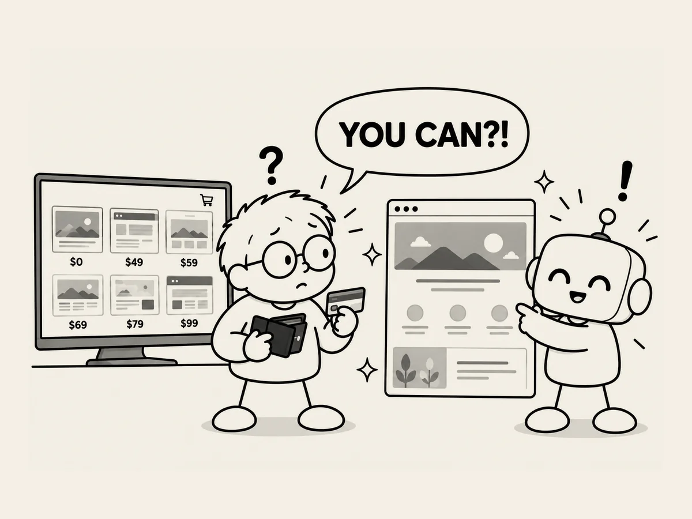

15.
템플릿을 사라고 했다. 그런데 자기가 만들었다.
사이트를 만들기 시작했을 때다.
AI에게 뭐가 필요한지 물어봤다.
그중 하나가 사이트를 만들 때 사용할 템플릿이었다.
템플릿을 제공하는 무료 사이트와 유료 사이트,
가격까지 알려줬다.
음.
하나 사야 하나?
그런데 실제로 템플릿을 사지는 않았다.
AI가 내가 시키지도 않은 표지 이미지를 그렸기 때문이다.
괜찮았다.
그 이미지를 그대로 사용하기로 했다.
그다음에는 전체 페이지를 그럴싸하게 만들어냈다.
이미지에 맞춰 전체 구성과 필요한 요소들이 배치됐다.
어?
템플릿은?
살 필요가 없어졌다.
처음에는 나보고 템플릿을 구하라고 하더니,
결국 자기가 만들었다.
너, 처음부터 할 수 있었던 거 아냐?
